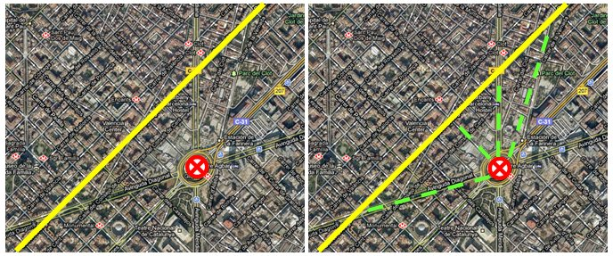
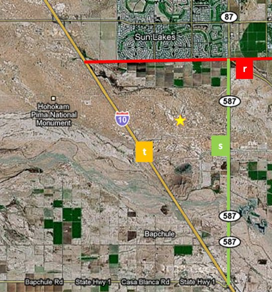

Mira la imagen de abajo. Se trata de un plano de la ciudad de Barcelona, concretamente de la Avenida Diagonal. Si desde la glorieta donde está la cruz roja queremos llegar a la Calle de Aragón (la línea amarilla), tenemos varias opciones, marcadas a la derecha con líneas verdes. Si nos preguntamos qué distancia hay desde la glorieta a la Calle de Aragón, ¿qué camino elegirías para medir? Es evidente que el más corto, y como puedes ver, el camino más corto se obtiene siguiendo una recta perpendicular a la que tenemos.

¿Y, cómo conseguimos una recta perpendicular? Está claro que necesitamos un punto, aquel de donde partimos, y un vector, que debe ser perpendicular a la recta, y por tanto a su vector director.
Vector normal a una recta.
| Si tenemos una recta \(r\), que tiene por vector director \(\vec{u}(a,b)\), llamaremos vector normal a la recta, a cualquier vector perpendicular al vector director. |
| Por ejemplo \(\vec{n}(-b,a)\), podría ser un vector normal de la recta, por que el producto escalar con \(\vec{u}\) es cero. |
Cálculo de la distancia de un punto a una recta.
|
Por tanto, para medir la distancia de un punto \(P\) a una recta \(r\), el procedimiento más intuitivo sería:
|
En el applet que tienes a continuación puedes ver un ejemplo. Para ello, pulsa el botón de reproducir (). Al lado puedes ajustar la velocidad.
Fórmula. Distancia de un punto a una recta.
Afortunadamente, no es necesario dar todos esos pasos para calcular la distancia de un punto a una recta ya que disponemos de una fórmula.
Si tenemos un punto \(P = (x_0, y_0)\) y una recta \(r \equiv Ax+By+C=0\), la distancia de \(P\) a \(r\) viene dada por:
\(d(P,r) = \dfrac{|Ax_0 + By_0 + C|}{\sqrt{A^2 + B^2}}\) |
Ejercicio.
Responde a las preguntas del cuestionario.

Éste es el desierto de Arizona, donde un rancho se encuentra en el lugar de la estrella, y está rodeada por tres carreteras:
-
La carretera local (rojo): \(r ≡ y - 5 = 0\)
-
La carretera 587 (verde): \(s ≡ x - 4 = 0\)
-
La ruta 10 (amarillo): \(t ≡ 5x + 4y + 24 = 0\)
En este sistema de referencia, el rancho tiene coordenadas \(P(0,0)\).
Para abrir un camino que comunique el rancho, se ha decidido buscar el camino más corto hasta una de las carreteras del mapa.